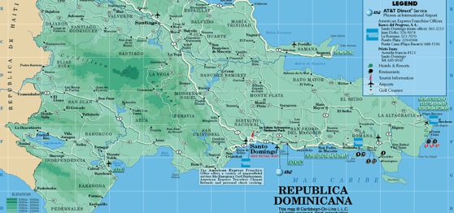

EXPORTAÇÃO ?

Com o objetivo de expandir ainda mais os horizontes, a Lucky Trash é uma empresa exportadora. Além disso, exportar mantém nosso mercado sempre ativo, traz divisas para o país e faz com que a empresa obtenha reconhecimento universal. De acordo com o confiável site da APEX, agência brasileira de promoção de exportações e investimentos, indicou que o país ideal para o nosso produto é a República Dominicana, por isso estabeleceremos uma loja física nesse local também, facilitando o contato com nossos clientes internacionais.
0 Commentários